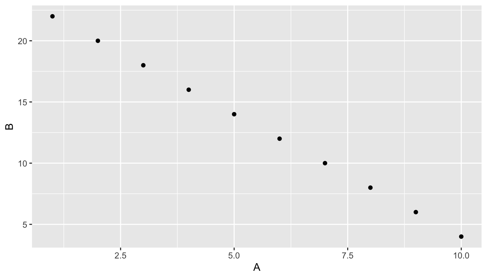
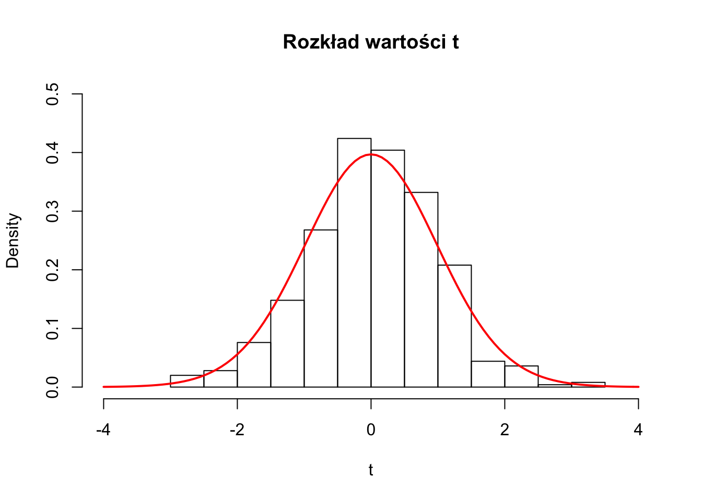

2 Wykresy statystyczne
2.1 Wykresy eksploracyjne
- służą głównie dla ich twórcy
- kluczową ich cechą jest możliwość iteracji
2.2 Wykresy komunikacyjne
- służą głównie przekazaniu wiedzy
- ich stworzenie wymaga czasu
- ważny jest dobór podpisów, kolorów, etc.
2.3 Wykresy w R
- istnieje wiele różnych możliwości tworzenia wykresów w R
- najczęściej używane to podstawowe silnik graficznych oraz pakiet ggplot2
2.4 ggplot2
2.5 ggplot2 - pierwszy wykres

2.6 ggplot2 - podstawowe informacje
- pakiet jest implementacją założeń zawartych w książce “Grammar of Graphics” Lelanda Wilkinsona
- ramka danych (
data.frame) jest zazwyczaj wymaganą klasą obiektu danych wejściowych (w tzw. postaci wąskiej) - istnieją dwie komendy pozwalające na tworzenie wykresów - qplot oraz ggplot
- pełna dokumentacja znajduje się na stronie - http://docs.ggplot2.org oraz https://ggplot2-book.org/
- przydatny, zwłaszcza na początku pracy może okazać się cheat sheet https://rstudio.com/wp-content/uploads/2015/03/ggplot2-cheatsheet.pdf
2.7 ggplot2 - podstawowe słownictwo / składnia
- geom - oznacza typ wykresu (np. “histogram”, “boxplot”, “point”, etc.)
- aesthetics (aes) - oznacza kształt, kolor, wielkość, etc.
- facets (facet) - oznacza wykresy dla podzbiorów
- kolejne elementy składni dodawane za pomocą
+
2.8 Zbiór danych
- Dane godzinowe i dobowe koncentracji zanieczyszczeń atmosferycznej na jednej ze stacji monitoringu jakości powietrza + podstawowe dane meteorologiczne
- Dane obserwacyjne (w minimalnym stopniu zaszumione)
- Pobierz pliki (“am8d.rda” i “am8_final.rda”) lub wczytaj dane bezpośrednio ze strony: www.enwo.pl/student
- Zapoznaj się ze strukturą tych plików
2.9 Histogram
- stworzony przez Karla Pearsona
- jest graficzną reprezentacją rozkładu
danych - wartości danych są łączone w przedziały (na osi poziomej) a na osi pionowej jest ukazana liczba punktów (obserwacji) w każdym przedziale
- różny dobór przedziałów może dawać inną informację
- w pakiecie ggplot2, przedział to domyślnie zakres/30
2.9.1 Domyślny silnik graficzny R
- funkcja
hist(np. na danych dobowych dla koncentracji PM10)

Możliwość dalszego ulepszania wyglądu histogramu za pomocą standardowych opcji graficznych. Szczegółowe informacje: ?plot, ?hist.
Najważniejsze argumenty:
main- zmiana tytułu wykresuxlab,ylab- zmiana podpisów osi X i Ycol- zmiana koloru wykresugrid- dodanie siatki dla dowolnie zdefiniowanych argumentów graficznych (lty =- typ linii,col- kolor,lwd- grubość linii, itd…)abline(wraz z argumentami) - dodanie linii (najczęściej z argumentamih=iv=)text- dodanie dowolnego tekstu w określonych współrzędnych histogramu
2.9.2 Histogram w ggplot2
- geom -
geom_histogram()
## `stat_bin()` using `bins = 30`. Pick better value with `binwidth`.
Argumenty pozwalające na ulepszenie wykresu:
binwidth- zmiana szerokości przedziałów histogramu (wewnątrzgeom_histogram)col- zmiana koloru linii histogramu (wewnątrzgeom_histogram)fill- zmiana koloru wypełnienia histogramu (wewnątrzgeom_histogram)labs- dostosowanie podpisów wykresu. Argumenty:title,subtitle,caption,x,y- themes - zmiana szaty graficznej wykresu na podstawie jednego ze zdefiniowanych szablonów
ggplot(am8d, aes(x = PM10d)) +
geom_histogram(col = 1) +
labs(
title = "Rozkład empiryczny stężeń PM10 na stacji AM8",
subtitle = "",
caption = "źródło: ARMAAG ()",
x = "Stężenie PM10",
y = "Liczba przypadków"
) +
theme_bw()## `stat_bin()` using `bins = 30`. Pick better value with `binwidth`.
2.9.3 Gęstość prawdopodobieństwa ggplot2
Rozkład danych można także przedstawić za pomocą gęstością prawdopodbieństwa na osi y. Jest to podejście bardziej wszechstronne, ponieważ umożliwia porównywanie rozkładów zmiennych między sobą a dodatkowo umożliwia umieszczanie dodatkowych “warstw” (np. wynikających z zastosowania jądrowych estymatorów gęstości prawdopodobieństwa)
- geom -
geom_density()
ggplot(am8d, aes(x = PM10d)) +
geom_histogram(col = 1, aes(y = ..density..)) +
geom_density(fill = "orange", alpha = 0.3) +
labs(
title = "Rozkład empiryczny stężeń PM10 na stacji AM8",
subtitle = "",
caption = "źródło: ARMAAG (jittered)",
x = "Stężenie PM10",
y = "PDF"
) +
theme_bw()## `stat_bin()` using `bins = 30`. Pick better value with `binwidth`.2.10 Przyspieszamy - facet_ i wykresy miesięczne
- Mając stworzony szablon wykresu można w łatwy sposób zautomatyzować proces naszych analiz po tzw. zmiennej grupującej
- Przykładowo, jeśli chcemy stworzyć 12 wykresów dla miesięcy możemy dodać kolejny fragment kodu
ggplotaktórym jestfacet_wrapbądźfacet_grida następnie podać po znaku tyldy (~) kolumne z unikalnymi wartościami:

2.11 Wykres liniowy
Jeden z najbardziej podstawowych typów wykresu, najczęściej stosowany w naukach atmosferycznych do zaprezentowania dynamiki zmiennych typu ciągłego
geom -
geom_lineSpróbujmy na początek “przyciąć” nasz zbiór danych dobowych tylko do roku 2010 i zapiszmy go jako am2010
Następnie stwórzmy wykres liniowy dla temperatury powietrza (kolumna
TEMPd)
- Jeśli chcemy dodać kolejną linię do naszego wykresu bez próby konwersji ramki danych do postaci wąskiej konieczne jest dodanie kolejnego
geom_line
2.12 Wykres rozrzutu
Najbardziej podstawowym (wizualnym) sposobem przedstawienia relacji pomiędzy dwoma zmiennymi jest wykres rozrzutu.
W podstawowym silniku graficznym R można do tego celu wykorzystać funkcję plot definiując zakresy dla osi X i Y. Spróbujmy wykreślić zależność pomiędzy koncentracją PM10 i temperaturą powietrza w miesiącach sezonu zimowego:
Dla pakietu ggplot2 ten sam efekt można osiągnać
2.12.1 Dane ilościowe i jakościowe na wykresach rozrzutu
Zaprezentowanie dodatkowej zmiennej/zmiennych na wykresach rozrzutu jest możliwe poprzez uwzględnienie danej cechy jako koloru, rozmiaru lub kształtu.
Dla standardowego silnik graficznego R ww. argumenty graficzne to col, cex i pch:
Dla pakietu ggplot będą to argumenty: color, size i shape:
Powstała paleta barwna ma charakter “ciągły”, co wynika z liczbowego charakteru zmiennej MONTH. Możemy ją także przekazać w sposób kategoryczny:
Następnie możemy modyfikować wielkość punktów, np. w zależności od np. (odwrotności) prędkości wiatru. Jak zinterpretujesz poniższy wykres?
ggplot(data = zima, aes(x = TEMPd, y = PM10d, color = as.factor(MONTH), size = round(1/VELd))) +
geom_point(alpha=0.8)Na koniec sprawdźmy działanie argumentu shape np. dla miesięcy:
2.13 Wykres pudełkowy (box and whisker plots)
Istnieje przynajmniej kilka wersji stosowanych wykresów pudełkowych, które stosuje się do przedstawienia typowych zakresów zmienności zjawiska. Jedna z implementacji wykresów pudełkowych obrazuje:
- pięć podstawowych statystyk opisowych oraz wartości odstające
- “pudełko”" to zakres międzykwantylowy
- linie oznaczają najbardziej ekstremalne wartości, ale nie odstające. Górna to 1,5*IQR ponad krawędź pudełka, dolna to 1,5*IQR poniżej wartości dolnej krawędzi pudełka; możliwa jest także implementacja z zakresem np. skrajnie niskich i wysokich wartości kwantyli
- linia środkowa to mediana
- “kropki” oznaczają wartości odstające
Poniżej zamieszczono przykładowy kod ilustrujący charakterystyczne zakresy wartości temperatur powietrza w poszczególnych miesiącach:
2.14 Wykresy słupkowe
Dla wizualizacji elementów nieciągłych dobrym sposobem są wykresy słupkowe definiowane za pomocą geom’u: geom_bar. Spróbujmy przedstawić liczbę przypadków z przkeroczeniem dobowej normy PM10 w poszczególnych miesiącach:
# przygotowanie dodatkowej kolumny z przekroczeniami PM10>50uq/m3
am8d$PM10hi = ifelse(am8d$PM10d>50, 1, 0)
tabelka = am8d %>% group_by(MONTH) %>% summarise(suma = sum(PM10hi)) # zliczamy liczbe przypadkow w miesiacach
str(tabelka)## Classes 'tbl_df', 'tbl' and 'data.frame': 12 obs. of 2 variables:
## $ MONTH: num 1 2 3 4 5 6 7 8 9 10 ...
## $ suma : num 19 28 19 2 1 0 0 0 1 9 ...2.15 Wykresy strukturalne
Wykresy słupkowe mogą być rozwinięte do postaci wykresów strukturalnych.
ggplot(am8d, aes(x = as.factor(MONTH))) +
geom_bar(position = "fill", aes(fill = as.factor(PM10hi)))+
labs(
title = "Przekroczenia normy dobowego stężenia PM10 - struktura miesięczna",
subtitle = "Stacja: AM8",
caption = "źródło: ARMAAG (jittered)",
x = "Miesiąc",
y = "%",
fill = "Przekroczenie"
) +
theme_bw() 2.16 Wskazówki
2.16.1 Modyfikacja wykresów
Wykresy ggplota nie muszą generowane jednorazowo. Mogą być one zapisane do obiektu a następnie zmodyfikowane i wywołane poprzez nazwę stworzonego obiektu.
Podany sposób postępowania można przedstawić na poniższym przykładzie rysowania dystrybuanty dla koncentracji średniej dobowej PM10:
2.17 Zapisywanie wykresów
Wykresy mogą być zapisane do postaci pliku graficznego na kilka sposobów. Najbardziej intuicyjne będzie wykorzystanie okna plot. Większą kontrolę można uzyskać z poziomu linii komend. Poniżej podano przykładowe 2 wywołania funkcji ggsave
2.18 Zadania
Wykorzystując dane godzinowe narysuj nastepujące wykresy:
- Wykres liniowy maksymalnej, średniej oraz minimalnej dobowej temperatury powietrza
- Histogram prędkości wiatru dla (a) całego roku (b) w ujęciu miesięcznym
- Wykres pudełkowy dla wilgotności względnej powietrza w ujęciu miesięcznym
- Stwórz wykres dystrybuanty temperatury powietrza dla (a) całego roku (b) w ujęciu miesięcznym. Zapisz wykres do dowolnie nazwanego obiektu
- Zmodyfikuj zapisany w pkt 4. obiekt dodając nowe podpisy osi. Następnie sprawdź działanie funkcji graficznej
coord_flip()
2.19 Inne
- Kolejne typy wykresów (inne geomy)
- Przekształanie danych na wykresach (np. scale_x_log10())
- Przedstawiane danych przestrzennych (geom_sf())
- Animacje (pakiet gganimate)
- Wykresy interaktywne (pakiet plotly)
- Inne dodatkowe pakiety - http://www.ggplot2-exts.org/gallery/
- …
2.19.1 Kilka porad
- nie redukuj!
- nie stosuj wykresów kołowych (!)
- nie stosuj wykresów 3D (!)
- uważaj na osie
- nie stosuj dwóch osi
There is no data that can be displayed in a pie chart, that cannot be displayed BETTER in some other type of chart. (John Tukey)
Odnośniki:
2.19.2 Dodatkowe źródła informacji
- książka Odkrywać! Ujawniać! Objaśniać! Zbiór esejów o sztuce prezentowania danych
- książka Fundamentals of Data Visualization
- książka Data Visualization: A practical introduction
- strona from Data to Viz
- strona Top 50 ggplot2 Visualizations - The Master List (With Full R Code)
- strona BBC Visual and Data Journalism cookbook for R graphics
- post Do’s and Don’ts for Effective Graphs
- post Real Chart Rules to Follow
- post Mistakes, we’ve drawn a few: Learning from our errors in data visualisation
- post The Evolution of a ggplot (Ep. 1)
- galeria R Graph Catalog
- galeria Data is ugly